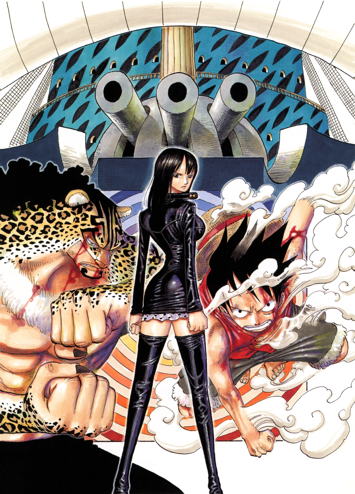

The Straw Hats, Sogeking, the Franky Family, and the shipwrights of the Galley-La Company arrive at Enies Lobby aboard the Rocketman to rescue Nico Robin and Franky. Standing in their way, however, are the forces of the World Government, including its deadly assassin organization, CP9. A massive battle ensues between the two sides when Luffy declares war against the World Government.
Assault on Enies Lobby: A Declaration of War
Reunited with Sanji and Sogeking (Usopp) shortly thereafter on the Rocketman, the Straw Hats, along with the Franky Family and Galley-La, began an all-out assault on the government island of Enies Lobby against thousands of Marine soldiers and the Cipher Pol agents in a last-ditch effort to rescue their friends Nico Robin and Franky before they are dragged through the Gates of Justice. The massive doors are the only thing standing between Robin and Franky and their respective destinations: Marine Headquarters and the terrifying prison of Impel Down.
While the others battled with the giants Oimo and Kashii, dog-riding guards, monstrous jurors and a three-headed judge, Luffy rushes ahead and engages the numerous Marines and Agents on the island; in spite of their numbers and numerous wrong turns, he overpowers them and eventually reaches the roof of the courthouse. Meanwhile, Spandam gloats with overconfidence until a Marine finally reports in that casualties are mounting at a horrendous rate: over 2,000 so far, with Luffy himself responsible for half that total. Furthermore, thanks to his previous contact with Dorry and Brogy, Sogeking was able to convince Oimo and Kashii to defect. For the first time, Spandam starts to panic. On the courthouse roof, Luffy encounters CP9 agent Blueno. Unlike last time, Luffy is able to keep track and match his skill. Then Luffy reveals his new Gear 2 ability,[13] which allows him to imitate the technique Soru to great effect, enhances his body to withstand the strain while using it, and allows him to overpower Blueno's strongest Tekkai technique, ultimately knocking him out.[14] Franky used his Coup de Boo to free himself from his chains taking Robin with him. Luffy called out to Robin and told her that he was coming for her. She replied that she didn't want to be saved and that she just wanted to die.
The others finally catch up, and as the CP9 and Straw Hats face each other, Robin's past is finally revealed, as well as her last reason for being unwilling to return to the crew: having been betrayed so many times in the past, she's terrified that one day the Straw Hats will see her as a burden, and also betray her. She screams that she would prefer death to that. The other Straw Hats quietly acknowledged the reason Robin had, then Spandam burst out laughing, saying she's absolutely accurate, and nobody would be stupid enough to think she wasn't a burden after traveling with her. Spandam pointed at the flag on top of the Tower of Justice and told Luffy that the organization after Robin is over 170 affiliated nations.
Luffy acknowledged this, then told Sogeking to shoot down the flag. Sogeking complied, utilizing his new Kabuto weapon to launch a fiery missile at the flag, setting it ablaze and shocking Spandam, Robin, and all the Marines and Agents in Enies Lobby beyond words; the Straw Hat Pirates had just declared war on the World Government. Spandam questioned Luffy's sanity, but he just bellowed back that he can take it, then tells Robin to admit that she wants to live. Unable to doubt her friends any longer after seeing them declare that her enemy is their enemy also, she tearfully begged them to take her out to sea with them.
One on One: Straw Hat Pirates vs CP9
Meanwhile, Franky and Fukurou's battle continued into the kitchen, each one trying to punch harder than the other. As the two swapped blows and taunts, Franky began to flag due to lack of cola, but their fight was interrupted by Kumadori and Chopper, who burst in through one wall. Chopper's first Rumble Ball has worn off, so he stalled Kumadori by locking him in an enormous fridge. He joined forces with Franky, and after "accidentally" giving the cyborg the wrong drink several times, Chopper gave Franky a full cola refill. Franky, now super-charged, punched Fukurou out of the building, and their fight continued outside, taking them down into the ocean and then high above the Tower, where Franky ended the fight with his Coup de Vent cannon. Franky then grabs the Number 4 key off of Fukurou's coat pocket.
In the moment before Kumadori finished him, he remembered the last time he took three Rumble Balls in a row, and how he woke up to hear that a monster had destroyed much of his village. His mentor Dr. Kureha had told him that the monster had been him and made him promise to never do it again. With an apology to Kureha, and hoping that his friends aren't nearby, he took a third Rumble Ball, and grew into a gigantic, terrifying monster that dwarfs Kumadori. He crushed the CP9 agent and threw him from the Tower of Justice to the main island.
Down in the basement, Luffy finally caught up to Lucci, who held him at bay while Spandam escaped towards the Gates of Justice with Robin. When Robin tried to escape, Spandam attempted to summon CP9 with his ordinary Den Den Mushi but used the Golden Den Den Mushi by mistake, which summons the Buster Call, a powerful Marine fleet with orders to destroy the entire island. Realizing his mistake, Spandam contacted all the Marines stationed on the island, ordering them to report in. Meanwhile, Marine Headquarters receives the Buster Call signal on the Silver Den Den Mushi. Noting the target to be Enies Lobby, they decide to launch the fleet straight from headquarters so as to reach there within 30 minutes.
Survive the Buster Call: Luffy vs Lucci
Luffy is unable to hurt Lucci, who hit him with a rapid-fire Shigan. Franky comes to Luffy's aid by trying to hit Lucci with the same move he used against Fukurou. Franky's move is unsuccessful against Lucci's much-stronger Tekkai, and Lucci prepared to strike Franky. Luffy used his Gear 2 ability and knocked Lucci away. Franky was astonished by Luffy's strength and power, and encouraged him to defeat Lucci. Luffy manages to keep the now transformed Lucci at bay and allowed Franky to leave the room to chase after Spandam and Robin.
Robin escaped and the Marines fired at her, but Franky jumped in the way to block the bullets (the landmines had only delayed him). Sogeking shot Zoro and Sanji's keys to Franky, leaving him with all of the keys to use on Robin's cuffs[41] (the Number 5 key was the right one). Spandam is shocked that CP9 was defeated. With all the keys in hand, Franky eventually unlocks Robin's Seastone cuffs. Robin thanks Sogeking but he replied that she should save the thanks until later. Sogeking also tells Robin that she is now free to do whatever she wants, and Robin made her decision. Using her Devil Fruit abilities she attacked Spandam.
The battle with Luffy and Lucci raged on. Luffy is able to land an attack on Lucci, who is forced back with pain. Lucci then explained to Luffy that his Gear 2 ability is wearing his body away and shortening his life span by pumping blood into his legs, causing his blood-flow to speed up. Luffy yelled back that he does not care and wishes to save his comrades first. So Lucci raised the stakes and used a Rankyaku to smash a wall, causing water to flow into the tower and the tunnel system below; anyone in it (namely any of Luffy's comrades trying to catch up to him) will drown.
Back at the battle, Lucci hits Luffy with the most powerful Rokushiki technique he knows, damaging Luffy heavily. However, it only leaves Luffy more determined than ever to defeat Lucci. Meanwhile, the Buster Call ships realized that Rob Lucci and Luffy are in the tower,[47] so they destroyed half the bridge and isolated the tower. The fleet aimed at where the rest of the crew were waiting, to capture Nico Robin and Zoro and the rest of the crew. The crew get ready to fight back so that Robin will not be recaptured. The Marines are astonished by the crew, noting that one pirate crew was able to take down Enies Lobby and CP9.
Despite being attacked again and again by Lucci, Luffy still fought back. Lucci hit Luffy with another Rokuougan, but this time, Luffy does not fall. Using everything he has left, Luffy bombards Lucci with an all-out Gomu Gomu no Jet Gatling, crushing him through the tower wall and finally defeating him. After the Marines and the crew witness Lucci's defeat, Luffy fell to the floor, exhausted but triumphant. Luffy then calls out to Robin that they are going back together, causing her to tearfully smile.